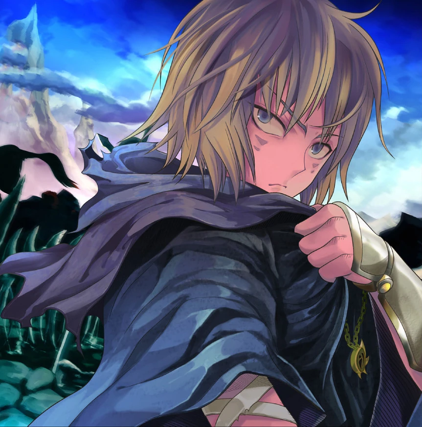

Coiling Dragon: £22.89
At £22.89, this master piece of wuxia novel is a bargain!
Empires rise and fall on the Yulan Continent. Saints, immortal beings of unimaginable power, battle using spells and swords, leaving swathes of destruction in their wake. Magical beasts rule the mountains, where the brave – or the foolish – go to test their strength. Even the mighty can fall, feasted on by those stronger. The strong live like royalty; the weak strive to survive another day.
This is the world which Linley is born into. Raised in the small town of Wushan, Linley is a scion of the Baruch clan, the clan of the once-legendary Dragonblood Warriors. Their fame once shook the world, but the clan is now so decrepit that even the heirlooms of the clan have been sold off. Tasked with reclaiming the lost glory of his clan, Linley will go through countless trials and tribulations, making powerful friends but also deadly enemies.
Come witness a new legend in the making. The legend of Linley Baruch.
Buy Novel More infoFor the true Wuxia Fans
A Will Eternal is the fourth major xianxia novel. It tells the tale of Bai Xiaochun, an endearing but exasperating young man who is driven primarily by his fear of death and desire to live forever, but who deeply values friendship and family.
Overgeared is novel about a virtual reality game called Satisfy that is being played globally. The main character is a guy who finds an extremely rare book called 'Pagma's Rare Book' and becomes a Legendary Class Player...
Still haven't found anything you like? Check out our list of other books.